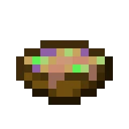
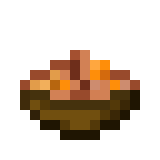

Made by Micro_
Sussyboi, before to be a chef a new chef again
I have handed down the masterchef role to Pr. Sussyboi,
he will be making the sus soup which is the top of the line soup
Sus soup is made from a mysterious ingredient that is only known to Sussyboi
Sussyboi is working on a new soup called "Rabbit Soup" which is a soup made from rabbits
You might want to learn more about Sussyboi's soup here